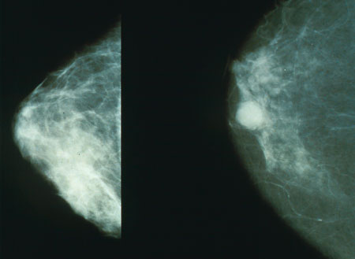

На светско ниво, ракот на дојката, е најчест рак кај жените, афектирајќи 10% од женската популација во некоја етапа од нивниот живот. Покрај напорите што се прават за да се постигне рана детекција и ефективен третман. Околу 20% од пациентите умираат од оваа болест. Според ова ракот на дојката, е втора по честота причина за смрт кај жените.
За да се открие некаква промена во градата, неопходно е да се знае што е нормално за дојките во смисла на изглед. Во овој случај доколку има појава на некоја абнормалност и промена во изгледот, структурата, конзистенцијата, симетричноста на градата тоа може лесно да се воочи и забележи. Доколку се забележат промени веднаш консултирајте се со лекар, во најракток можен рок, без одлагање дека промета сама ќе се повлече. Во почетните стадиуми нема никакви симптоми или забележителни знаци. Меѓутоа со прогредирање на процесот и растење на туморот ќе се забележат значителни знаци.
Третманот на ракот на дојка зависи од возраста на жената и нејзиното здравје , а исто така и од типот,големината и локацијата на туморот , како и од тоа дали ракот е останат во градата или е метастазиран на други органи од човековото тело. За успешно лекување најважно е раното откривање што се постигнува пред се со Здравствено просветување на жената.Штом се открие јазол во дојката многу е важно брзото поставување дијагноза и започнување со третманот. 3/4 од случаите на рак на дојка се откриваат од самите жени или нивните партнери, но 50-60% од овие жени чекаат три и повеќе месеци додека да се обратат на лекар. Ова одлагање на третманот е суштествен проблем бидејќи жените кои чекаат повеќе од три месеци имаат драматично полоша прогноза во однос на жените кои веднаш се јавуваат на лекар. Затоа сите жени кај кои се појавиле јазли, тврди маси во дојките треба да бидат прегледани од специјалист во рок од две недели по нивното откривање!!!
Особена тежина на болеста и дава и психичката лабилност која ја проследува. Жената е депримирана и исплашена поради сознанието дека има рак на дојка и дека нејзиниот живот можеби е загрозен, потоа дека можеби ке ја изгуби едната града. Затоа многу важен дел во лекувањето завзема и психосоматското лекување. Мошне знчајна е поддршката која жената ја добива од своите блиски и од околината, пристапот кон жената во предоперативната подготовка, односот со медицинскиот тим за време на лекувањето. Да и се објасни на пациентката за неопходноста од операција, можните последици но секако и за можноста за естетска корекција на градата по зафатот се со цел смирување на менталните и телесните оптоварувања и успешно излекување. Голем успех во постоперативната нега допринесува и примената на јога или медитација. Исхрана Одредена растителна храна содржи фотоестрогени, слаби растителни естрогени кои можат да бидат мнгу полезни во борбата против некои видови рак на дојката, чуствителни на хормони. Фотоестрогените го запираат влегувањето на телесниот естроген во ткивото на дојката. Задржувањето на естрогенот надвор од дојката може да ја намали веројатноста за рак, или пак при постоење на болеста да ја намали брзината со која клетките на ракот се размножуваат. Пченицата, сојата, маслинките, сливите, морковот, јаболката, слаткиот компир и кокосовиот орев спаѓаат во видот на храна која содржи фотоестрогени и затоа се препорачуваат во поголеми количини.